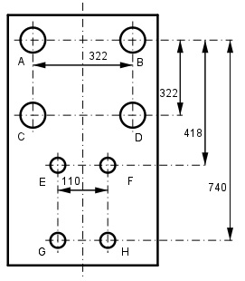

Aufgabe 194 Berechnen Sie die Kontrollabstände AD, AE, CE, AG und CH der Bohrschablone.

Satz von Pythagoras für das Kontrollmaß AD: AD2 = 3222 + 3222 AD2 = 103 684 + 103 684 = 207 368 |√ AD = 455,4 mm Satz von Pythagoras für das Kontrollmaß AE: 322 - 110 AE2 = 4182 + (------------)2 2 AE2 = 174 724 + 11 236 = 185 960 |√ AE = 431,2 mm Satz von Pythagoras für das Kontrollmaß CE: 322 – 110 418 - 322 CE2 = (-------------)2 + (-------------)2 2 2 CE2 = 11 236 + 9 216 = 20 452 |√ CE = 143 mm Satz von Pythagoras für das Kontrollmaß AG: 322 – 110 AG2 = (-------------)2 + 7402 2 AG2 = 11 236 + 547 600 = 558 836 |√ AG = 747,6 mm Satz von Pythagoras für das Kontrollmaß CH: 322 110 CH2 = (------ + ----- )2 + (740 – 322)2 2 2 CH2 = 46 656 + 172 724 = 221 380 |√ CH = 470,5 mm